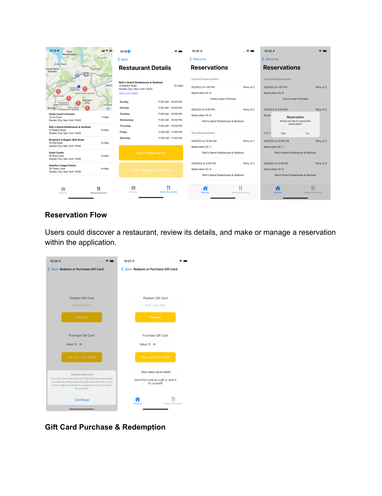

01 / CASE STUDY
Dine on Demand
iOS Restaurant Ordering & Reservation Platform
A centralized dining platform combining restaurant discovery, reservations, food ordering, spending management, gift cards, and delivery tracking.
View case study →